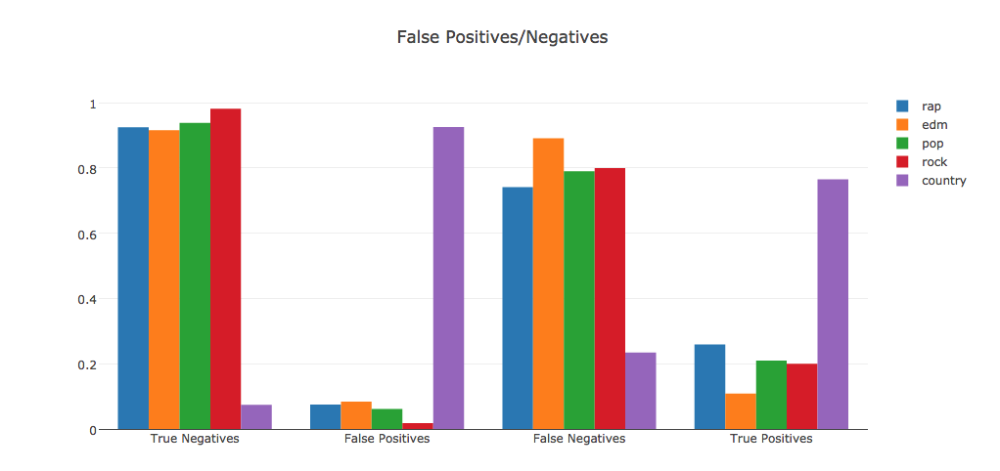
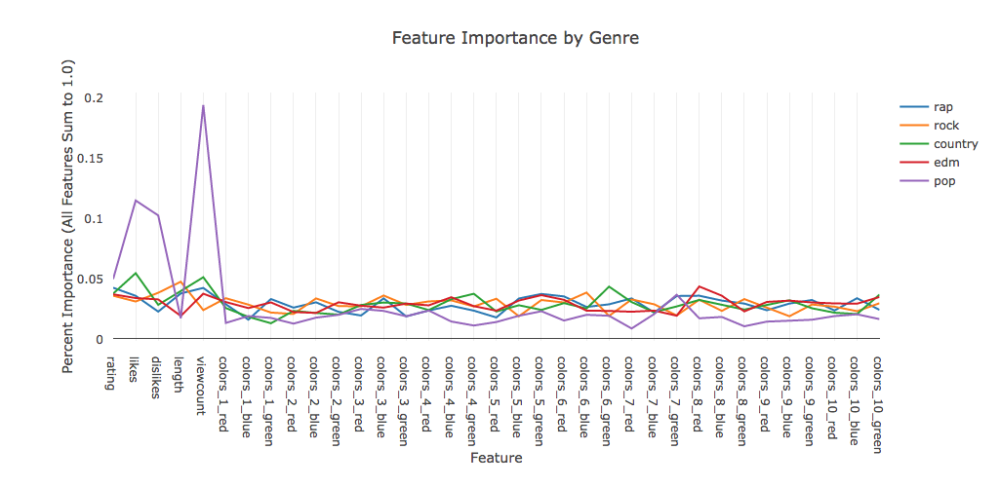

Overview and Motivation
Our team wanted to find out if it was possible to intelligently determine the genre of a video by its YouTube metadata (likes, dislikes, view count, etc.) and its average frame colors throughout the video.
After thorough analysis, Pixal emerged: a web interface that takes a YouTube URL as input, and outputs a predicted genre and an average-color-per-frame image. This is done using a combination of OpenCV color analysis and scikit-learn machine learning, and makes intelligent assumptions on our data to output a substantially accurate genre classification for the input video.
Related Work
Our motivation primarily comes from GitHub user Sacert's 'Colors of Film' analysis, in which he analyzed popular Hollywood films and extracted average frame colors. He used OpenCV and some built-in python libraries to generate his output, which is an image with colors from each frame of the movie.
Initial Questions
When we began our analysis, the question we asked was, "Can we accurately predict music genre by analyzing various aspects of a music video?" This question was obviously extremely broad, and we quickly realized that we needed to narrow the scope and focus in on a few important/relevant features.
Thus, we revised our question to, "Can we accurately predict music genre by analyzing average frame color and YouTube's video metadata (likes, dislikes, view count, etc.)?" This question was much more manageable, but was more geared towards a final product than the actual data science process.
We then divided our project into two separate questions, with connected, but different goals. Firstly, "What are the most defining/relevant features for a music video when it comes to genre?", and, "Is it possible to leverage these features to accurately predict the genre of a music video?" These are the two questions that our project really sought to answer.
Analysis
We created a random forest classifier based on only the metadata features (view count, likes, dislikes, etc.) and one based off of only the color data. After training and testing them, we found that the one with only metadata yielded a score of .43, while the one with only color data gave a score of .21. We combined the two feature sets to make one classifier with all of the features. This gave us an average score of .4.To try to learn more, we made binary classifiers for each genre. For example, the rock classifier would take a video as input, and return either true or false for 'is_rock'. These classifiers allowed us to see more individual features of our video genres. We found that when it comes to classifying for country music, everything looks like country. You'll notice below that the country classifier incorrectly labels a large number (~300) of non-country videos as country. Where the rest of the videos suffer is that they have a hard time correctly identifying themselves as what they actually are. For example, any given input video will likely be classified as 'not EDM', even if it actually is EDM.
Lastly, we used scikit-learn to find the most important features of our classifiers, as shown below. We noticed that pop classification seems to place heavy emphasis on the likes and view count features. Aside from a small increase in importance of view count over all genres, none of the features, be they metadata or color data, seem to be particularly more important than others. This could mean that frame color data and view/like data is not the right information for classifying genre.
Takeaways
- When looking at individual feature data, we notice that the genre classifiers seem to either classify everything as that particular genre, or nothing as that particular genre. This seems to indicate that none of the genres are very distinct from the others.
- As a result of this, we see a high number of false positives or false negatives in all of our predictions.
- No particular feature seems to be extremely important when classifying genres, which could indicate that no feature is particularly useful. We would normally expect that some features stick out as the most useful or indicative of a genre. Because we do not see this, it could mean that all of the features are not particularly useful.
Even though we did not create a strong classifier, we still count our project as successful. We learned that despite the differences in the sounds of music, the quantifiable traits (color data, metadata) that we examined are very similar.
Future Improvements
Since we do know there are differences between genres, we could search further into data to try to find them. We would consider the following ideas in future exploration.
- Use audio data. This could include average pitch frequency, musical key, chord progressions used, presence of consonance/dissonance, and more
- Examine lyrics and song title, using something like LDA or Watson's tonal analysis
- Expand our test and train sets